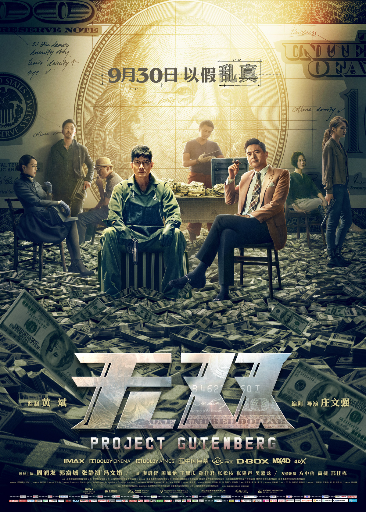

导演: 庄文强
编剧: 庄文强
主演: 周润发 / 郭富城 / 张静初 / 冯文娟 / 廖启智 / 更多...
类型: 剧情 / 动作 / 悬疑 / 犯罪
制片国家/地区: 中国大陆 / 中国香港
语言: 汉语普通话 / 粤语 / 英语 / 泰语 / 波兰语
上映日期: 2018-09-30(中国大陆) / 2018-10-04(中国香港)
片长: 130分钟
身陷囹圄的李问（郭富城 饰）被引渡回港，他原本隶属于一个的跨国假钞制贩组织。该组织曾犯下过多宗恶性案件，而首脑“画家”不仅始终逍遥法外，连真面目都没人知道。为了逼迫李问吐露“画家”真实身份，警方不惜用足以判死刑的假罪证使其就范。就在此时，富有的遗孀阮文（张静初 饰）申请保释李问，而警方提出的条件依然是“画家”的真面目。 原来早在十数年前，李问和阮文是一对画家情侣，无奈女友的作品受人青睐，李问的画作却被贬得一文不值。就在此困顿期间，他制作假画的才能被“画家”（周润发 饰）发掘，进而成为对方美元假币团伙中的一员……